Sie sehen ein gelbes Eingabefeld und die Schalter: Prüfen und Lösung.
Tragen Sie Ihr Ergebnis ein, prüfen Sie es oder starten Sie eine Lösung.
Aufgabe 1
Das Verhältnis der Längen |PQ| zu |RS| beträgt 4 : 3.
Wie groß ist |PQ|, wenn |RS| = 120 mm?
Aufgabe 2
Das Verhältnis der Längen |PQ| zu |RS| beträgt 3 : 4.
Wie groß ist |RS|, wenn |PQ| = 84 mm?
|RS| = mm
Aufgabe 3
Ein Wanderweg ist 12,5 km lang. Wie lang ist die
Strecke auf einer Wanderkarte im Maßstab 1 : 25 000?
Aufgabe 4
Die direkte Entfernung zwischen 2 Punkten beträgt
auf einer Landkarte (Maßstab 1 : 25 000) 32 cm.
Wie lang ist die Strecke in Wirklichkeit?
km
Aufgabe 5
Berechnen Sie das Längenverhältnis der Strecken
A̅B̅ zu C̅D̅,
5
wenn |AB| = --- * |CD|.
2
Aufgabe 6
a verhält sich zu b wie 5 : 4.
Schreiben Sie b als Vielfaches von a.
b = * a
Aufgabe 7
Fotos von 24 mm x 36 mm sollen vergrößert werden.
Berechnen Sie die Länge der kleineren Seite,
wenn die größere 18 cm lang sein soll.
Aufgabe 8
Ein Rechteck ist 6 cm lang und 4 cm breit.
Eine Seite eines ähnlichen Rechtecks ist
12 cm lang, wielang ist die andere?
8 cm oder cm
Aufgabe 9
Das Dreieck ABC hat die Maße a = 3 cm, b = 4 cm
und c = 6 cm. Von dem ähnlichen Dreieck A'B'C'
ist a' = 9 cm bekannt. Wie groß sind die
restlichen Seiten des ähnlichen Dreiecks?
Aufgabe 10
Das Dreieck ABC hat die Maße a = 4 cm, b = 6 cm
und c = 8 cm. Von dem ähnlichen Dreieck A'B'C'
ist c' = 2 cm bekannt. Wie groß sind die
restlichen Seiten des ähnlichen Dreiecks?
b' = cm
Aufgabe 11
Das Rechteck ABCD hat die Maße a = 5,4 cm und
b = 3,8 cm. Von dem ähnlichen Rechteck A'B'C'D'
ist a' = 2,7 cm bekannt. Wie groß ist der Umfang u'
des ähnlichen Rechtecks?
Aufgabe 12
Das Dreieck ABC hat die Maße a = 5,2 cm, b = 3,6 cm,
c = 6,4 cm und u = 15,2 cm. Von dem ähnlichen Dreieck
A'B'C' ist u' = 22,8 cm bekannt.
Wie groß sind die Seiten des ähnlichen Dreiecks?
b' = cm
Aufgabe 13
Das Dreieck ABC hat die Maße a = 5 cm, b = 4 cm
und c = 3,5 cm. Von dem ähnlichen Dreieck A'B'C'
sind c' = 2,8 cm und u' = 10 cm bekannt.
Wie groß sind die fehlenden Seiten des ähnlichen
und der Umfang des Ursprungsdreiecks?
Aufgabe 14
Das Dreieck ABC hat die Maße b = 7 cm und
u = 23 cm. Von dem ähnlichen Dreieck A'B'C' sind
b' = 12,6 cm und c' = 18 cm bekannt. Wie groß
sind die fehlenden Seiten des Ursprungsdreiecks
und der Umfang des ähnlichen Dreiecks?
u' = cm
Aufgabe 15
Das Dreieck ABC hat die Maße a = 13 cm und c = 5 cm.
Von dem ähnlichen Dreieck A'B'C' sind a' = 9,1 cm und
u' = 19,6 cm bekannt. Wie groß sind die fehlenden Seiten
des ähnlichen und der Umfang des Ursprungsdreiecks?
Aufgabe 16
Ergänzen Sie die Wirklichkeitslänge, den Maßstab
und die Zeichnungslänge.
Maßstab 1 : 5 5 : 1 1 : 40 0000
Zeichnungslänge 80 mm 80 mm 5 cm
Wirklichkeitslänge
Maßstab 1 : 40 000
Zeichnungslänge cm 17 cm 6 cm
Wirklichkeitslänge 12 km 4,25 km 12 km
Aufgabe 17
Welchen Maßstab hat eine Landkarte auf der 2
Punkte 5 cm voneinander entfernt sind, wenn
sie in Wirklichkeit 12,5 km auseinander liegen?
Aufgabe 18
2 Punkte sind auf einer Landkarte mit dem Maßstab
1 : 25 000 6 cm voneinander entfernt.
Wieviel km Luftlinie sind es in Wirklichkeit?
km
Aufgabe 19
Modelleisenbahnen gibt es in unterschiedlichen Größen.
Spur H0 im Maßstab 1 : 87, Spur N mit 1 : 160 und Spur Z
mit 1 : 220. Ein Waggon der Spur H0 hat eine Länge von
282 mm. Wie lang ist er in Wirklichkeit?
Aufgabe 20
Ein Triebwagen in der Spur H0 ist 263 mm lang.
Wie lang ist er in Spur N?
mm
Aufgabe 21
Ein Rechteck ABCD hat die Seitenlängen a = 6,6 cm
und b = 3,9 cm. Ein dazu ähnliches Rechteck A'B'C'D'
entsteht mit dem Ähnlichkeitsfaktor k = 4. Bestimmen
Sie den Flächeninhalt A des ähnlichen Rechtecks.
Aufgabe 22
Ein Rechteck ABCD hat die Seitenlängen a = 4 cm
und b = 7 cm. Von dem ähnlichen Rechteck A'B'C'D'
ist a' = 6 cm bekannt. Bestimmen Sie den Flächeninhalt A
des ähnlichen Rechtecks.
A = cm²
Aufgabe 23
In einem Dreieck ABC ist c = 6 cm und hc = 4 cm.
Ein dazu ähnliches Dreieck A'B'C' entsteht mit dem
Ähnlichkeitsfaktor k = 2. Bestimmen Sie den Flächen-
inhalt A des ähnlichen Dreiecks.
Aufgabe 24
In einem Dreieck ABC ist a = 4,8 cm und ha = 2,5 cm.
Von dem ähnlichen Dreieck A'B'C' ist die Höhe
ha' = 3,25 cm bekannt. Bestimmen Sie den Flächen-
inhalt A des ähnlichen Dreiecks.
A = cm²
Aufgabe 25
Das rechtwinklige Dreieck ABC hat die Maße γ = 90°,
a = 4,5 cm und b = 6 cm. Von dem ähnlichen Dreieck
A'B'C' ist a' = 3,6 cm bekannt. Wie groß sind der
Flächeninhalt und der Umfang des ähnlichen Dreiecks?
Aufgabe 26
Das Viereck ABCD hat einen Flächeninhalt von 60 cm².
Wie groß ist der Flächeninhalt des ähnlichen Vierecks
A'B'C'D' bei einem Ähnlichkeitsfaktor k = 3?
A = cm²
Aufgabe 27
Das Quadrat ABCD hat einen Flächeninhalt von 144 cm².
Das ähnliche Quadrat A'B'C'D' hat einenvon 81 cm².
Berechnen Sie den Ähnlichkeitsfaktor k.
Aufgabe 28
Das Quadrat A'B'C'D' hat einen Flächeninhalt von
484 cm ² und ist mit k = 2 ähnlich zum Quadrat ABCD.
Welchen Flächeninhalt A hat das Quadrat ABCD?
A = cm²
Aufgabe 29
Um wieviel Prozent vergrößert sich der Flächeninhalt
eines Vielecks, wenn alle Seiten um 20% vergrößert
werden?
Aufgabe 30
Auf einem Stadtplan mit einem Maßstab von 1 : 19 000
beträgt die Seitenlänge eines Planquadrates 4,1 cm.
Wie groß ist es in Wirklichkeit?
m²
Aufgabe 31
Mit welchem Faktor müssen die Seiten eines
Rechtecks vergrößert werden, wenn sich sein
Flächeninhalt verdoppeln soll?
Aufgabe 32
Ein quadratisches Bild mit der Seitenlänge a = 8 cm
wird auf einem Fotokopiergerät mit dem Faktor 141%
vergrößert. Weitere Einstellungen 64%, 71%, 200%.
a₁) Welche Seitenlänge a' hat das neue Quadrat?
a₂) Um welchen Faktor hat sich der Flächeninhalt
vergrößert? Um =
a₃) Ein DIN A4 Blatt soll auf DIN A5 verkleinert werden.
Welcher Kopierfaktor ist einzustellen?
Aufgabe 33
Bestimmen Sie x zeichnerisch aus a : b = b : x
für a = 55 mm und b = 32 mm.
Aufgabe 34
Die Steigung einer Fahrbahn ist auf 1,45 km mit
1 : 36 angegeben. Wieviel m liegt der Endpunkt
der Strecke höher als der Anfangspunkt?
m
Aufgabe 35
Ist das Dreieck ABC mit a = 2,4 cm, b = 4 cm und
c = 2,8 cm ähnlich dem Dreieck DEF mit a' = 3,6 cm,
b' = 6 cm und c' = 4,2 cm?
Aufgabe 36
Ein Kunde will statt einer quadratischen Platte mit
2 500 cm² eine mit doppelt so großen Seiten haben.
Wie groß wird die neue Platte?
cm²
Aufgabe 37
Ein Bild hat die Maße 24 cm x 36 cm. Es soll mit einem
Rahmen der Breite 3 cm versehen werden. Sind sich das
Ursprungsbild und das gerahmte ähnlich?
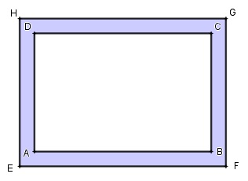
Aufgabe 38
In einen Briefumschlag von 16 cm x 12 cm sollen
ähnliche Briefkarten passen. Wie lang muss die kürzere
Seite der Karte sein, wenn die längere 15,2 cm beträgt?
cm
Aufgabe 39
Ein Möbelhaus bietet 4 Tische mit zueinander
ähnlichen Tischplatten an. Berechnen Sie die Maße
allerPlatten, wenn die größte 128 mm lang und 96 cm
breit und die nächstkleinere 96 cm lang ist.
Aufgabe 40
Sind die Vorderseite und die Deckseite des Kartons
zueinander ähnlich?
Aufgabe 41
Welches von den 3 Dreiecken
Dreieck 1: a1 = 6 cm, b1 = 10 cm und c1 = 12 cm
Dreieck 2: a2 = 9 cm, b2 = 12 cm und c2 = 15 cm
Dreieck 3: a3 = 7,5 cm, b3 = 12,5 cm und c3 = 15 cm
ist nicht ähnlich dem Dreieck mit a = 3 cm, b = 5 cm
und c = 6 cm?
Aufgabe 42
Berechnen Sie die fehlenden Seiten des Dreiecks
A'B'C', wenn a' = 10 cm, α' = 104° und γ' = 56°?
b' = cm
Aufgabe 43
Berechnen Sie die Längen der fehlenden Dreieckseiten.
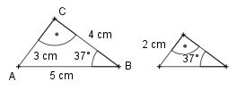
Aufgabe 44
Begründen Sie:
a1) Die Dreiecke ADC und ABC sind ähnlich.
a2) Die Dreiecke DBC und ABC sind ähnlich.
a3) Die Dreiecke DBC und ADC sind ähnlich.
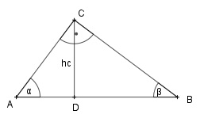
Aufgabe 45
Wie groß sind die Entfernungen in Wirklichkeit?
Maßstab Karte
1 : 10 18 cm
1 : 900 000 26 cm
Aufgabe 46
Wie groß sind die Entfernungen auf der Karte?
Maßstab Wirklichkeit
1 : 30 000 1,2 km
1 : 5 000 000 30 km
lz = cm
Aufgabe 47
Bestimmen Sie die Länge der unzugänglichen Strecke x.
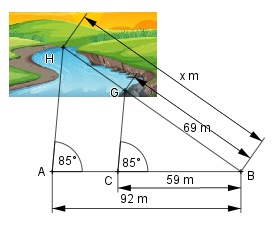
Aufgabe 48
Bestimmen Sie die Länge der unzugänglichen Strecke x.
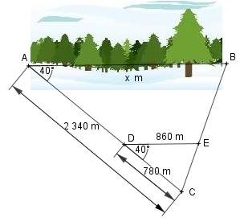
x = m
Aufgabe 49
Bestimmen Sie die Länge der unzugänglichen Strecke DG.
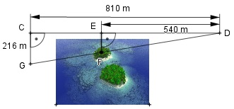
Aufgabe 50
Ein Turm wirft einen Schatten von 42 m, eine
davorstehende 1,8 m große Person einen von 2,25 m.
a₁) Wie hoch ist der Turm?
a₂) Wie lang ist der Schatten eines 17 m hohen Baumes
neben dem Schornstein?
a₃) Wie hoch wäre der Schornstein, wenn der Schatten
der Person 15 cm länger wäre?
m
Aufgabe 51
Um die Höhe einer quadratischen Pyramide mit einer
Seitenlänge von 240 m zu bestimmen, hat man ihre
Spitze über die Spitze eines Stabes angepeilt, der eine
Schattenlänge von 3 m hat und 100 m vom Fuß der
Pyramide entfernt steht. Wie hoch ist die Pyramide?
Aufgabe 52
In einer Entfernung von 1 800 m peilt eine Person mit
einer einfachen Vorrichtung, siehe Skizze, die Spitze
eines Berges an. Wie weit ist die Spitze Luftlinie
entfernt, wenn die Augenhöhe vernachlässigt wird?
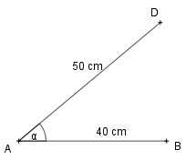
m
Aufgabe 53
Ein Tennisplatz ist ungefähr 24 m lang. Ein Mädchen
sitzt im Wohnzimmer eines Hauses 1,5 m von einem
1,1 m breiten Fenster entfernt. Wie weit darf das Haus
vom Tennisplatz entfernt stehen, wenn das Mädchen
die komplette Platzlänge überblicken will?
Aufgabe 54
Ein Mann peilt aus 140 m, einer Augenhöhe
von 1,7 m und über einen 3,95 m langen und
4 m vor ihm stehenden Stab einen Turm an.
Wie hoch ist der Turm?
m
Aufgabe 55
Ein Beobachter hält eine Murmel mit 5 mm Durch-
messer im Abstand von 60 cm so vor sein Auge,
dass sie den Vollmond genau verdeckt.
Welche Entfernung zum Mond ermittelt er bei einem
Mondradius von 1 738 km?
Aufgabe 56
Ein Schiff peilt ein zweites senkrecht zu seiner
Fahrtrichtung an. Der Abstand beträgt 3,6 km.
Nach 8 km beträgt der Abstand noch 1,7 km.
Nach wieviel weiteren km treffen sie sich?
Nach km
Aufgabe 57
Zur Übung haben 4 Teams den Abstand x ermittelt.
Team 1: 25 m, Team 2; 27 m, Team 3: 26 m,
Team 4: 26,5m. Zu welchem Team passt die Skizze?
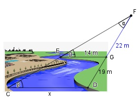
Aufgabe 58
Abschätzung einer Gebäudebreite hält man seinen
Daumen so vor sich, dass die Daumenbreite die
Gebäudebreite genau verdeckt.
a₁) Wie breit ist ein Gebäude, 510 m entfernt,
bei einerDaumenbreite von 2,4 cm und einem
Abstand zum Auge von 64 cm?
a₂) Wie weit ist ein 12 m breites Haus vom Auge
entfernt, wenn es von einer Daumenbreite von 2,2 cm
33 cm vor dem Auge verdeckt wird?
m
Aufgabe 59
Der Messkeil und die Messlehre dienen dazu,
kleine Spaltbreiten oder Dicken von Drähten,
wenn auch ungenau zu ermitteln.
Bestimmen Sie die Spaltbreite und die Drahtdicke.
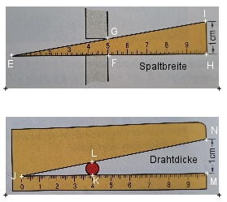
Aufgabe 60
Bestimmen Sie die Länge der unzugänglichen Strecke CE.
CD = 405 m, CG = 280 m, CF = 210 m.
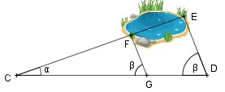
CE = m
Aufgabe 61
Bestimmen Sie die Länge der unzugänglichen Strecke CD.
ED = 324 m, CF = 129,6 m, EG = 86,4 m
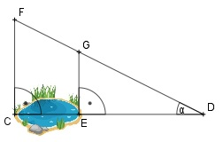
Aufgabe 62
Bestimmen Sie die Länge der unzugänglichen Strecke DE.
CF = 945 m, CE = 630 m, FG = 855 m.
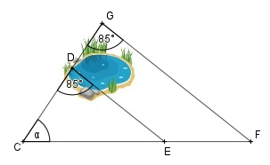
DE = m
Aufgabe 63
Bestimmen Sie die Länge der Strecke AF.
AD = 11,2 cm, DB = 8 cm, AG = 16,8 cm
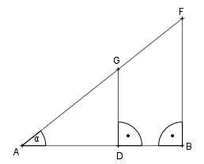
Aufgabe 64
Bestimmen Sie die Länge der Strecke DF.
AB = 8,8 cm, GF = 5,5 cm, BD = 12 cm.
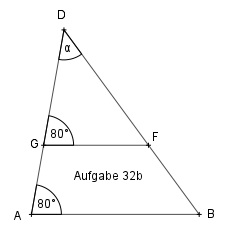
DF = cm
Aufgabe 65
Bestimmen Sie die Länge der Strecke AF.
AB = 225 m, BC = 525 m, BE = 245 m
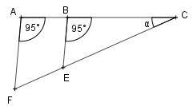
Aufgabe 66
Bestimmen Sie die Länge der Strecke EF.
DE = 128 m, EA = 112 m, AB = 90 m.
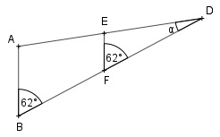
EF = m
Aufgabe 67
Ein 1,5 m hoher Stab wirft einen Schatten von 4,8 m.
Ein Baum hat einen Schatten von 32 m, dessen Ende mit
dem Ende des Stabschattens zusammenfällt? Bestimmen
Sie die Höhe CE des Baumes.
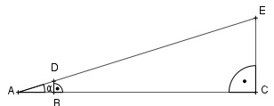
Aufgabe 68
Wie breit ist der Fluss?
DE = 35 m, FG = 25 m, DF = 21 m.
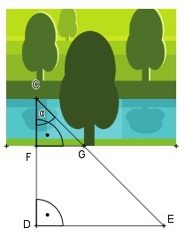
CF = m
Aufgabe 69
Bestimmen Sie die Länge der Strecke x.
Alle Maße in cm. BD und CE verlaufen parallel.
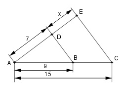
Aufgabe 70
Bestimmen Sie die Länge der Strecke x.
Alle Maße in cm. BD und CE verlaufen parallel.
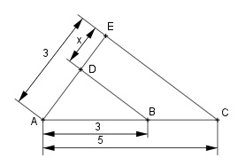
x = cm
Aufgabe 71
Bestimmen Sie die Länge der Strecke x.
Alle Maße in cm. BD und CE verlaufen parallel.
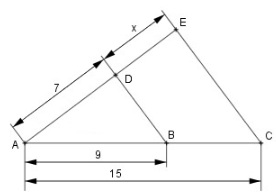
Aufgabe 72
Bestimmen Sie die Länge der 4. Seite, wenn
BD||CE und a = 3 cm, b = 7 cm und c = 4,2 cm.
d = cm
Aufgabe 73
Bestimmen Sie die Länge der 4. Seite, wenn BD||CE
und b = 6,3 cm, c = 5,2 cm und d = 9,1 cm.
Aufgabe 74
Bestimmen Sie die Länge der 4. Seite, wenn
BD||CE und a = 2,5 cm, b = 4 cm und d = 3,5 cm.
c = cm
Aufgabe 75
Bestimmen Sie die Länge der 4. Seite, wenn BD||CE
und a = 4,8 cm, c = 5,4 cm und d = 7,5 cm.
Aufgabe 76
Bestimmen Sie die Länge der Strecke AD, wenn
DC||BE und AC = 4 cm, CB = 3 cm und DE = 1,5 cm.
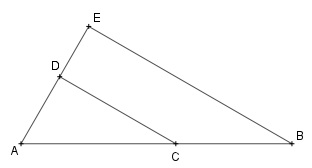
AD = cm
Aufgabe 77
Bestimmen Sie die Länge der Strecke DE, wenn DC||BE
und AC = 3,6 cm, BC = 2,4 cm und AD = 4,5 cm.
Aufgabe 78
Bestimmen Sie die Länge der Strecke CE, wenn CE||DB.
Alle Maße in m.
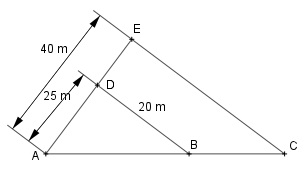
CE = m
Aufgabe 79
Bestimmen Sie die Länge der Strecke DE, wenn CE||DB.
Alle Maße in cm.
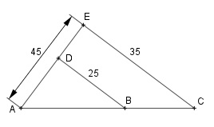
Aufgabe 80
Bestimmen Sie die Länge der Strecke DE, wenn DC||BE.
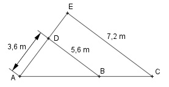
DE = m
Aufgabe 81
Bestimmen Sie die Längen der 2 fehlenden Seiten,
wenn BD||CE und a = 7,2 cm, c = 6,8 cm, d = 10,2 cm
und e = 5,4 cm.
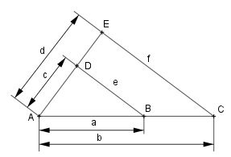
Aufgabe 82
Bestimmen Sie die Längen der 2 fehlenden Seiten,
wenn BD||CE und a = 4,8 cm, d = 11 cm, e = 5,4 cm
und f = 9,9 cm.
c = cm
Aufgabe 83
Bestimmen Sie die Längen der 2 fehlenden Seiten,
wenn BD||CE und b = 6 cm, d = 7,2 cm, e = 4,9 cm
und f = 8,4 cm
Aufgabe 84
Bestimmen Sie die Längen der 2 fehlenden Seiten,
wenn BD||CE und a = 4,8 cm, d = 11 cm, e = 5,4 cm
und f = 9,9 cm.
d = cm
Aufgabe 85
Bestimmen Sie die Länge der Strecke x.
Alle Maße in cm. BD und CE verlaufen parallel.
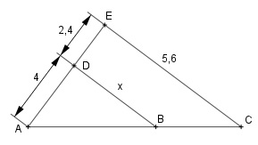
Aufgabe 86
Bestimmen Sie die Länge der Strecke x.
Alle Maße in cm. BD und CE verlaufen parallel.
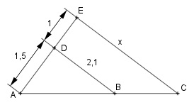
x = cm
Aufgabe 87
Bestimmen Sie die Länge der Strecke x.
Alle Maße in cm. BD und CE verlaufen parallel.
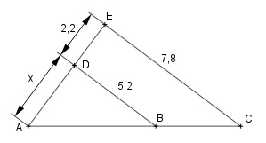
Aufgabe 88
Bestimmen Sie die Länge der Strecke x.
Alle Maße in cm. BD und CE verlaufen parallel.
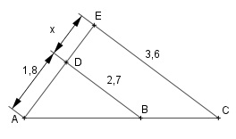
x = cm
Aufgabe 89
Bestimmen Sie die Länge der Strecke HE, wenn
AB = 7 cm, DF = 4cm, BE = 2 cm und ED = 1 cm.
AB, HE und FD verlaufen parallel.
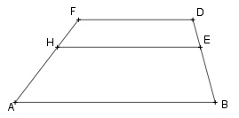
Aufgabe 90
Bestimmen Sie die Länge der Strecke x.
Alle Maße in cm. AB und DE verlaufen parallel.
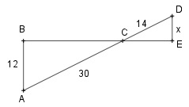
x = cm
Aufgabe 91
Bestimmen Sie die Länge der Strecke x.
Alle Maße in cm. AB und DE verlaufen parallel.
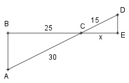
Aufgabe 92
Bestimmen Sie die Länge der Strecke x.
Alle Maße in cm. AB und DE verlaufen parallel.
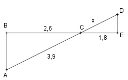
x = cm
Aufgabe 93
In welchem Verhältnis teilt M die Höhe des Trapezes,
wenn AB = 4,5 cm, AM = 2,8 cm und DM = 1,6 cm.
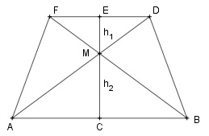
Aufgabe 94
Wie hoch ist ein Turm, dessen Höhe h aus 28 m über
die Spitze eines Stabes von 2 m aus einer Entfernung
von 3,61 m angepeilt wird?
(Ohne Berücksichtigung der Augenhöhe).
h = m
Aufgabe 95
Bestimmen Sie die Länge der unzugänglichen Strecke AD,
wenn AC = 63 m, CE = 14 m, BD = 10 m und BC||DE.
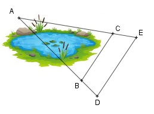
Aufgabe 96
Wie hoch ist ein Turm, der einen Schatten von 10 m
hat, im Vergleich zu einem 2 m langen Stab, der parallel
zu dem Turm steht und einen Schatten von 95 cm hat?
Es sind m.
Aufgabe 97
Wie hoch ist ein Baum, dessen Höhe h mit einem
Försterdreieck aus einer Entfernung von 21 m und
einer Augenhöhe von 1 m angepeilt wird.
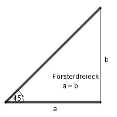
Aufgabe 98
Bestimmen Sie die Flussbreite CD, wenn die Strecken
mit DE = 20 m, FG = 28 m und DF = 20 m abgesteckt
wurden.
CD = m
Aufgabe 99
Zur Messung der Seelänge CD wurden die Punkte C, D,
E, F und G abgesteckt. Die Entfernungen betragen:
EF = 96 m, FC = 58 m, FG = 66 m und CD||FG.
Wie lang ist der See?
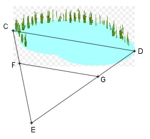
Aufgabe 100
In den Dachstuhl soll eine Stütze von 80 cm eingesetzt
werden. In welchem Abstand l vom Punkt A aus muss
man sie einfügen? DC||EF.
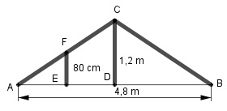
Abstand = m
Aufgabe 101
Der Mond ist gerade verdeckt, wenn man einen Stift
mit einem Durchmesser von 7 mm etwa 78 cm vor ein
Auge hält. Welchen Durchmesser hat er, wenn er
384 000 km entfernt ist?
Aufgabe 102
Die Höhe eines Turmes wird über die Spitzen zweier
Stäbe von 1,6 m und 2,4 m, die 1,6 m auseinanderstehen,
angepeilt. Wie hoch ist der Turm, wenn der längere Stab
98 m entfernt steht?
Er ist m hoch.
Aufgabe 103
Bestimmen Sie die Längen der Strecken u, v, w und x.
BG||CE||DF.
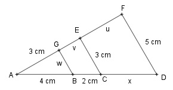
Aufgabe 104
Bestimmen Sie die Längen der Strecken u, v, w und x.
BF||CG.
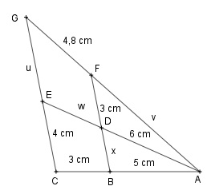
w = cm
Aufgabe 105
Bestimmen Sie die Längen der Strecken u, v, w und x.
AE||CF||BH.
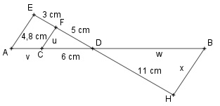
Aufgabe 106
Um die Breite CD des Flusses zu bestimmen, wurden
die weiteren Punkte so abgesteckt, dass CD||EF verläuft.
Wie breit ist der Fluss, wenn EF = 84 m, FG = 48 m und
GD = 43 m?
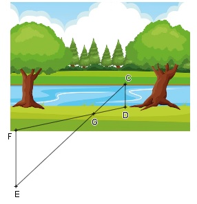
CD = m
Aufgabe 107
In welcher Höhe h muss der Kegel abgeschnitten
werden, wenn der Radius der Schnittfläche 2 cm
betragen soll?
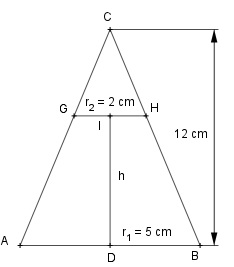
Aufgabe 108
Hält man seinen 2 cm breiten Daumen 45 cm von einem
Auge entfernt, wird beim Peilen eine Hausfront von 7,32 m
verdeckt. Wie weit ist der Betrachter vom Haus entfernt?
Es sind m.
Aufgabe 109
Berechnen Sie den Abstand CF der Insel vom Ufer,
wenn FG = 24 m, DF = 40 m und DE = 36 m.
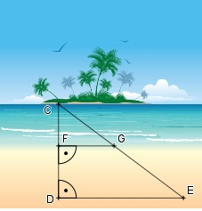
Aufgabe 110
Wie groß ist die Seite a' eines Dreiecks mit einem
Umkreisradius von 4,5 cm, das ähnlich ist dem Dreieck
mit a = 2,8 cm, b = 3,9 cm, γ = 48°?
a' = cm
Aufgabe 111
Wie hoch sind die in gleichen Abständen eingefügten
senkrechten Stützen?
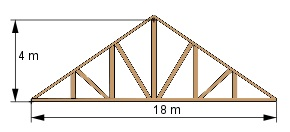
Aufgabe 112
Bestimmen Sie den Anteil der farbigen Fläche A'
an der Gesamtfläche A des Parallelogramms.
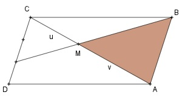
A'/A = 3/
Aufgabe 113
Bestimmen Sie den Anteil der farbigen Fläche A'
an der Gesamtfläche A des Parallelogramms.
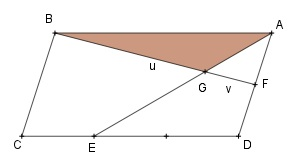
Aufgabe 114
Bestimmen Sie den Anteil der farbigen Fläche A'
an der Gesamtfläche A des Parallelogramms.
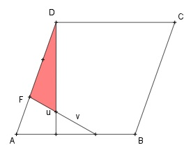
A'/A = 3/
Aufgabe 115
Bestimmen Sie den Anteil der farbigen Fläche A'
an der Gesamtfläche A des Dreiecks.
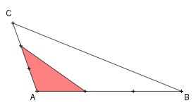
Aufgabe 116
Bestimmen Sie den Anteil der farbigen Fläche A'
an der Gesamtfläche A des Dreiecks.
A'/A = 1/
Aufgabe 117
Bestimmen Sie den Anteil der farbigen Fläche A'
an der Gesamtfläche A des Dreiecks.
Aufgabe 118
Wie groß ist die farbige Fläche A des Trapezes,
wenn AB = 200 mm, AD = 120 mm und CD = 56 mm?
es sind mm².

 d = cm
d = cm  CD = m
CD = m